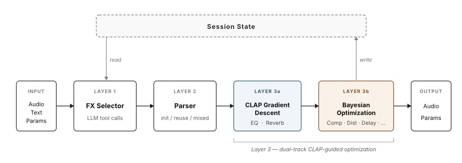
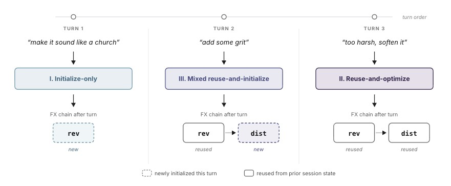

Overview
Text-to-preset systems are single-shot: one descriptor, one preset. Real mixing is iterative, a sequence of small corrections. We study that multi-turn case, which we call sequential FX refinement.
Given a parameter state P and a sequence of natural-language instructions
I₁, I₂, …, each instruction updates the effect parameters so the rendered audio
tracks the user's evolving intent while preserving relevant structure from the previous state.
InstructFX2FX is a hybrid: an LLM plans, an optimizer refines. The LLM selects and orders the FX chain and proposes initial parameters; CLAP-guided optimization then tunes them perceptually, gradient descent for differentiable effects (EQ, reverb) and Bayesian optimization for the rest, without discarding what earlier turns achieved.
Architecture
Fig.01 · Harness

Fig.02 · Routing

Initialize. Build a fresh FX chain when the instruction starts a new direction.
Extend. Reuse the current chain and add new effects on top of it.
Reuse & optimize. Keep the existing effects and re-tune their parameters in place.
Listen
Real outputs on the differentiable, gradient-descent path (EQ and reverb). Each turn names what Layer 1 decided and lets you scrub the Layer 3a gradient descent. Press play to hear that checkpoint.
Results
Exp.01 · Directed MMD

Exp.03 · Trajectory

Cite
@inproceedings{instructfx2fx2026,
title = {InstructFX2FX: A Multi-turn Text-to-Preset Demo for
Iterative Audio Effect Refinement},
author = {Yu, Song-Ze and Liessens Dujardin, Milan and
Cai, Yuxuan and Zhang, Wantong},
booktitle = {Proc. 29th Int. Conf. Digital Audio Effects (DAFx)},
year = {2026}
}